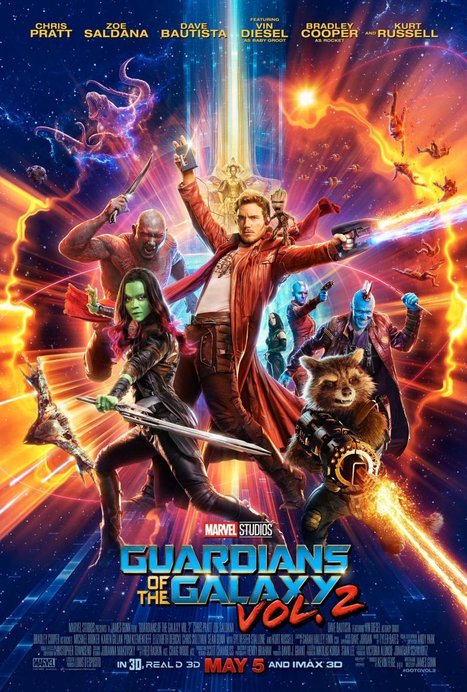

Guardianes de la Galaxia Vol.2

Título original : Guardians of the Galaxy Vol. 2
Año : 2017
Duración: 137 min
País: Estados Unidos
Dirección: James Gunn
Reparto: Chris Pratt, Zoe Saldana, Dave Bautista, Bradley Cooper, Vin Diesel, Kurt Russell, Michael Rooker, Karen Gillan, Elizabeth Debicki, Tommy Flanagan, Sean Gunn, Pom Klementieff, Chris Sullivan, Sylvester Stallone, Stan Lee
Género: Ciencia ficción. Aventuras. Acción. Comedia | Aventura espacial. Superhéroes. Cómic. Marvel Comics. Secuela. 3-D
Sinopsis: Continúan las aventuras del equipo en su travesía por los confines del cosmos. Los Guardianes deberán luchar para mantener unida a su nueva familia mientras intentan resolver el misterio de los verdaderos orígenes de Peter Quill. Viejos rivales se convertirán en nuevos aliados.